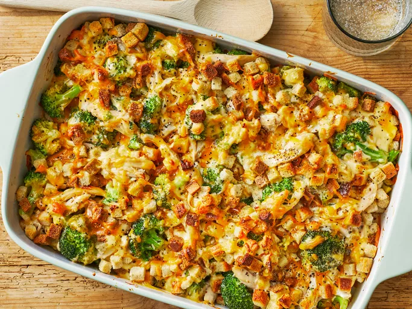

Home
Broccolli Chicken Casserole

Description
A deliciously creamy chicken, broccoli, and stuffing casserole with shredded chicken and tender broccoli in a cheesy mushroom sauce. Use your favorite stuffing mix to sprinkle over top for a crunchy, flavorful topping. Use leftover chicken or turkey to speed up prep time even more.
Ingredients
- chicken
- broccoli
- stuffing mix
- cream of mushroom soup
- mayonnaise
- cheddar cheese
Steps
- Cook the Chicken
Simmer chicken in a large pot with water until it's no longer pink inside, about 15 minutes. Shred the chicken. If you're using leftover chicken or rotisserie chicken, simply shred it (no need to cook it again, it will warm up in the oven).
- Make the Soup Base
Mix the cream of mushroom soup with the mayonnaise.
- Assemble the Casserole
Combine the soup mixture with the chicken, broccoli, and Cheddar cheese. Transfer it to a 9x13-inch baking dish and top with the stuffing mix.
- Bake the Casserole
Bake in a 350 degree F oven for about 25-30 minutes, until the stuffing is golden brown.